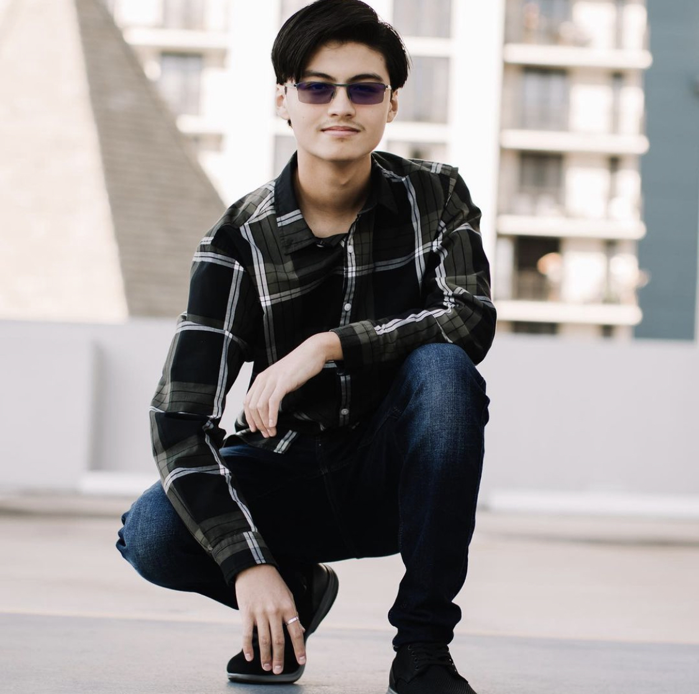
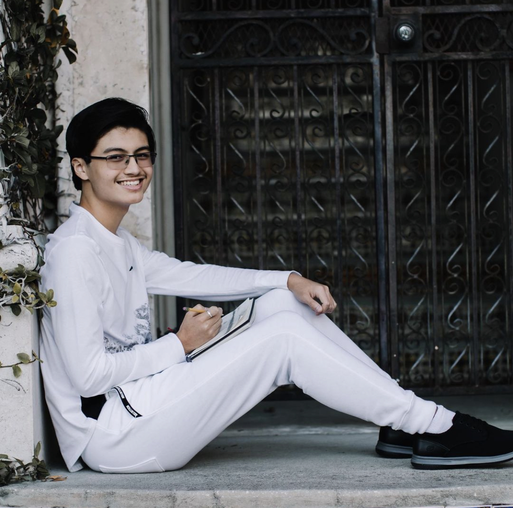

Socials

Welcome to the page for everything you need to know about me, Justin Diaz!

To start this off, I would like to say that my socials usernames are not racist, I am in fact South Korean
as well as Puerto Rican! I moved to the states when I was three years old and began my American dream. Ever
since I was a wee little boy I loved creating pieces with what I could find, from blocks to wooden train sets.
As time went on I began to focus more on drawings, from simple doodles bored at school to sketches in notebooks.
I developed a liking for art and was determined to find a profession where I could use my artisitic abilities.
That leaves us to the present, where I take time to pratice what I have learned while mkaing time for family,
friends, and personal well being.

Now I dont have a great lists from accomplishments, I was never the smartest in class, or did houndreds of hours
in community service, but there are a few that I am proud of.
Like I said it's not many and quite random, however I do feel that I am a fast learner and willing to take the time
to master anything that leads me to my future goals.
I got my first Job in August of 2021 working as an employee at a Poke restuarant. It taught me the basics of customer
service and how to manage supplies. As of making this I am yet to work at Universal, but working there won't be as much
of a difference. I am more looking foward to an intership into graphic design or animation to begin getting expierence
in working in such a career.
Here I have various works of art that I have created, from sketches to digital art pieces. If I wanna begin a future
career in animation I have to understand the basics of art and how to apply it digitally.